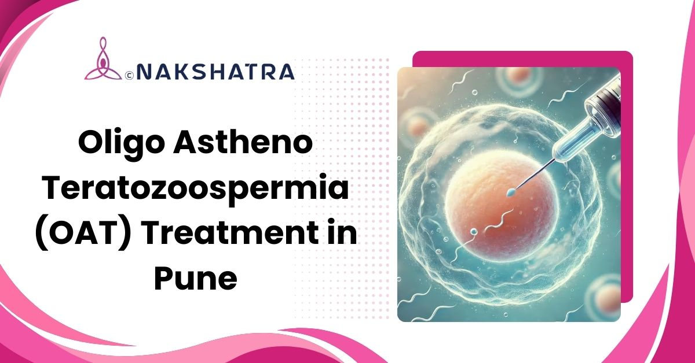

Semen analysis first
Testing checks sperm count, movement, and shape before planning care.
Diagnosis-led care for low sperm count, poor motility, and abnormal sperm morphology with medical, lifestyle, procedural, and ART options when suitable.

Testing checks sperm count, movement, and shape before planning care.
Hormones, varicocele, infection, oxidative stress, and lifestyle factors are evaluated.
IUI, IVF, ICSI, or sperm retrieval may be discussed based on severity.

Oligo Astheno Teratozoospermia, or OAT syndrome, is a male fertility condition where sperm count is low, motility is reduced, and sperm morphology is abnormal. Because all three sperm parameters are affected, evaluation usually includes semen analysis, physical examination, hormone tests, genetic screening, and imaging when needed to identify the cause and plan treatment.
OAT care is planned by looking at sperm count, movement, and morphology as one connected picture.
Oligozoospermia means fewer sperm are present in semen than expected.
Asthenozoospermia means sperm movement is reduced, affecting the ability to reach the egg.
Teratozoospermia means sperm shape is abnormal, which may affect fertilization.
Treatment may combine medical care, procedures, assisted reproduction, and lifestyle support depending on the cause and severity.
Related male fertility services often discussed alongside OAT care.
OAT can result from genetic factors, hormonal imbalances, infections, varicocele, medications, oxidative stress, and lifestyle habits like smoking, alcohol, or obesity. Early evaluation helps identify the cause and guide treatment.
With accurate diagnosis, targeted treatments such as medical therapy, surgical correction, sperm retrieval techniques, assisted reproduction, and lifestyle improvements may improve sperm quality and fertility planning.
Diagnosis includes semen analysis, physical examination, hormone blood tests, genetic screening, and imaging when needed to detect varicocele or structural issues.
The most common sign is difficulty conceiving despite regular unprotected intercourse. Other signs may include testicular pain or swelling, varicocele, hormonal imbalance, or abnormal semen analysis results.
Medical therapies may include hormonal treatment, antioxidants, and medicines chosen according to the cause. These are used to support sperm count, motility, and morphology.
Surgery may be needed for conditions such as varicocele or selected structural causes. Procedures are considered after evaluation and discussion of the couple's fertility plan.
A healthy diet, exercise, stress reduction, quitting smoking and alcohol, and avoiding heat exposure may support sperm count, motility, and morphology alongside medical care.
Book a consultation at Nakshatra Clinic in Baner, Pune to discuss semen analysis, sperm health, varicocele, medical therapy, sperm retrieval, IVF, ICSI, or IUI planning.